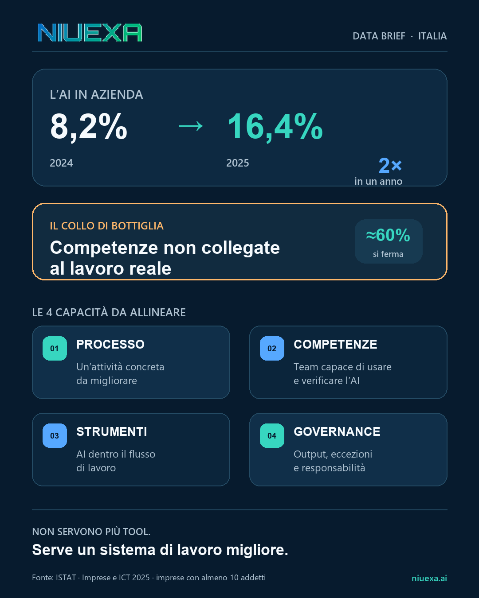
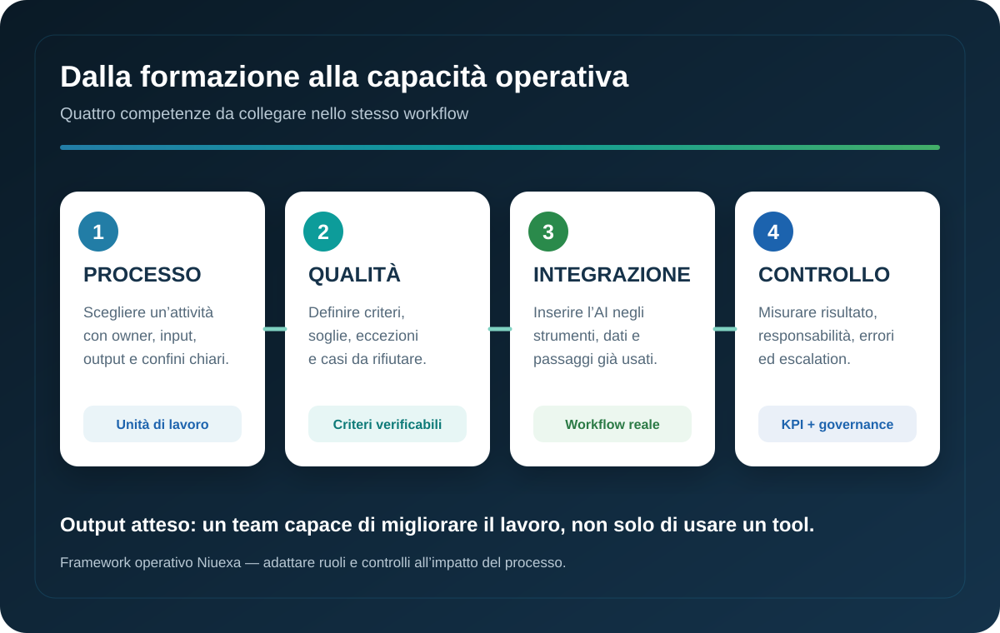

Risposta rapida: cosa sono le competenze AI operative?
Le competenze AI operative sono la capacità di usare l’intelligenza artificiale dentro un processo reale, con obiettivi, dati, criteri di qualità, responsabilità ed eccezioni definiti. Non coincidono con la conoscenza di un modello o con la capacità di scrivere un prompt. Un team è operativo quando sa scegliere il lavoro da migliorare, inserire l’AI nel flusso, verificare gli output e misurare il risultato.
Il dato italiano: l’adozione raddoppia, il gap resta
Secondo il rapporto ISTAT Imprese e ICT — Anno 2025, l’uso di almeno una tecnologia di AI tra le imprese con almeno 10 addetti è passato dall’8,2% nel 2024 al 16,4% nel 2025. Nelle PMI il valore è salito dal 7,7% al 15,7%, mentre nelle grandi imprese ha raggiunto il 53,1%.
La crescita, però, non elimina il divario. ISTAT rileva che la mancanza di competenze adeguate frena quasi il 60% delle aziende che hanno valutato un investimento in AI senza poi realizzarlo. Inoltre, la distanza nell’intensità di utilizzo tra grandi imprese e PMI è arrivata a 37 punti percentuali nel 2025.
Questi numeri non dimostrano che ogni progetto fallisca per la formazione. Indicano però un problema strutturale: acquistare tecnologia è più rapido che costruire la capacità organizzativa necessaria per usarla bene.
Perché un corso generico non basta
Una formazione introduttiva è utile per creare linguaggio comune, ridurre timori e mostrare possibilità. Diventa insufficiente quando rimane separata dal lavoro. Il partecipante impara una funzione, torna nel proprio reparto e trova dati non accessibili, responsabilità confuse, strumenti non integrati e nessun criterio per distinguere un output accettabile da uno rischioso.
Il limite non è didattico: è progettuale. Se il percorso non parte da un’unità di lavoro concreta, il trasferimento resta affidato all’iniziativa individuale. Si moltiplicano esperimenti personali, ma non necessariamente processi migliori.
Per questo l’upskilling AI dovrebbe produrre almeno un risultato verificabile: una procedura ridisegnata, un set di criteri qualità, un prototipo inserito nel workflow o una misurazione prima/dopo. La conoscenza conta quando cambia una decisione o un passaggio operativo.
Il framework Niuexa in quattro livelli

1. Competenza di processo
Il team deve saper descrivere l’attività da migliorare: input, output, frequenza, owner, tempi, costi, dipendenze e principali eccezioni. “Usare l’AI nel marketing” è troppo ampio; “preparare una prima bozza di risposta a una richiesta commerciale completa” è un’unità di lavoro valutabile.
2. Competenza di qualità
Prima di scegliere il modello occorre definire cosa significa “abbastanza buono”. I criteri possono includere completezza, accuratezza rispetto alle fonti, tono, conformità, formato e presenza di dati obbligatori. Servono anche esempi di output da rifiutare e soglie che attivano la revisione umana.
3. Competenza di integrazione
Un buon output isolato non produce valore se deve essere copiato manualmente tra cinque strumenti. Il team deve comprendere dove arrivano i dati, quali sistemi possono essere collegati, quali permessi sono necessari e dove registrare l’esito. Non tutti devono programmare, ma devono saper progettare il passaggio di informazioni.
4. Competenza di controllo
Ogni workflow AI ha bisogno di un owner, log, gestione delle eccezioni e KPI. Il controllo non consiste nel rileggere tutto per sempre: significa assegnare autonomia proporzionata all’impatto, verificare campioni e casi critici, e sapere chi interviene quando il sistema non ha dati sufficienti o produce un risultato fuori policy.
Come progettare un percorso di upskilling che produce risultati
Partire da una baseline
Misura il processo prima della formazione: tempo ciclo, volume, rilavorazioni, errori, attese ed escalation. Senza baseline, è facile confondere entusiasmo e uso frequente con un miglioramento reale.
Lavorare su casi reali e dati autorizzati
Ogni gruppo dovrebbe applicare le tecniche a un caso pertinente al proprio ruolo, usando dati sintetici o autorizzati. Questo rende visibili vincoli che un esempio generico nasconde: campi mancanti, eccezioni commerciali, policy interne e dipendenze da altri team.
Separare capacità comune e capacità specialistica
Tutti hanno bisogno di alfabetizzazione su limiti, privacy, verifica e uso responsabile. Process owner, referenti tecnici e responsabili di rischio richiedono moduli più profondi su integrazione, valutazione, logging e governance. Formare tutti allo stesso modo spreca tempo e lascia scoperti i ruoli decisivi.
Chiudere con una prova operativa
Il percorso dovrebbe terminare con un test nel workflow, non con un quiz sullo strumento. La prova può essere una settimana pilota controllata, con criteri di accettazione, campionamento e confronto con la baseline.
KPI per misurare competenze e adozione
- Adozione nel workflow: quota di casi idonei in cui il metodo viene realmente usato.
- Output accettati: percentuale che supera i criteri senza rilavorazione sostanziale.
- Tempo ciclo: variazione del tempo totale, inclusi attesa, revisione ed eccezioni.
- Tasso di override: quante proposte AI vengono corrette o rifiutate e perché.
- Copertura delle eccezioni: casi fuori standard riconosciuti e instradati correttamente.
- Autonomia sostenibile: attività che possono procedere con il livello di controllo previsto.
Un indicatore come “numero di prompt scritti” misura attività, non capacità. I KPI utili collegano il comportamento del team al risultato del processo.
Checklist per scegliere il primo caso d’uso formativo
- Il problema è frequente e abbastanza circoscritto?
- Esiste un owner che può modificare il processo?
- Input e output possono essere osservati e confrontati?
- I dati necessari sono disponibili e autorizzati?
- La qualità può essere tradotta in criteri verificabili?
- Gli errori sono reversibili o controllabili nel pilot?
- È possibile misurare una baseline prima di iniziare?
- Il team ha tempo e responsabilità per applicare quanto appreso?
Se mancano owner, dati o criteri, il caso non è pronto. La scelta corretta può essere preparare il processo prima di aggiungere tecnologia.
Fonte e perimetro
Il punto di partenza di questa guida è il post Niuexa pubblicato su LinkedIn il 13 luglio 2026, dedicato alla crescita dell’adozione AI e al gap di competenze operative. I dati citati provengono da ISTAT, Imprese e ICT — Anno 2025, pubblicato il 15 dicembre 2025.
Il framework in quattro livelli è una guida operativa Niuexa. Va adattato al processo, al settore, ai dati trattati e al livello di impatto delle decisioni. Non sostituisce valutazioni legali, normative o di sicurezza.
FAQ sulle competenze AI in azienda
Quali competenze AI servono davvero in azienda?
La capacità di scegliere un processo, definire qualità e limiti, integrare l’AI negli strumenti, gestire eccezioni e misurare il risultato.
Un corso di prompt engineering basta?
No. Migliora l’uso individuale, ma l’adozione aziendale richiede anche dati, workflow, responsabilità, integrazioni e controlli condivisi.
Come si misura l’efficacia della formazione AI?
Con indicatori prima e dopo: tempo ciclo, rilavorazioni, qualità accettata, eccezioni gestite e adozione nel lavoro reale.
Da quale processo dovrebbe partire una PMI?
Da un’attività frequente, misurabile, con dati accessibili, rischio controllabile e un owner disponibile a ridisegnare il flusso.
Chi deve partecipare?
Process owner, utenti operativi e almeno un referente tecnico o governance, con profondità diverse in base al ruolo.